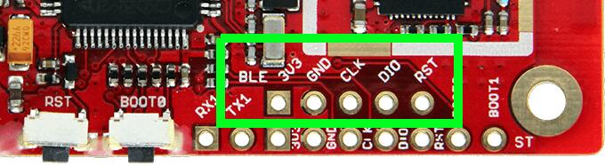

96Boards Carbon nRF51
Overview
This is the secondary nRF51822 chip on the 96Boards Carbon and provides Bluetooth functionality to the main STM32F401RET chip via SPI.
Note
If you’re looking to reprogram the main STMicro part, see 96Boards Carbon. Users should not use this configuration unless they want to reprogram the secondary chip which provides Bluetooth connectivity.
Hardware
The 96Boards Carbon nRF51 has two external oscillators. The frequency of the slow clock is 32.768 kHz. The frequency of the main clock is 16 MHz.
See 96Boards Carbon for other general information about the board; that configuration is for the same physical board, just a different chip.
Supported Features
Interface |
Controller |
Driver/Component |
|---|---|---|
NVIC |
on-chip |
nested vector interrupt controller |
RTC |
on-chip |
system clock |
UART |
on-chip |
serial port |
GPIO |
on-chip |
gpio |
FLASH |
on-chip |
flash |
SPIS |
on-chip |
SPI slave |
RADIO |
on-chip |
Bluetooth |
The default configuration can be found in boards/96boards/carbon/96b_carbon_nrf51822_defconfig
Connections and IOs
SPI
96Boards Carbon nRF51 has one SPI, which for providing Bluetooth communication. The default SPI mapping for Zephyr is:
SPI1_NSS : P0.25
SPI1_SCK : P0.07
SPI1_MISO : P0.30
SPI1_MOSI : P0.00
The SWD debug pins are broken out to an external header; all other connected pins are to the main STM32F401RET chip.
Programming and Debugging
Flashing
The 96Boards Carbon nRF51 can be flashed using an external SWD debugger, via the debug header labeled “BLE” on the board’s silkscreen. The header is not populated; 0.1” male header must be soldered on first.

96Boards Carbon nRF51 Debug
The following example assumes a Zephyr binary zephyr.elf will be
flashed to the board.
It uses the Black Magic Debug Probe as an SWD programmer, which can be connected to the BLE debug header using flying leads and its 20 Pin JTAG Adapter Board Kit. When plugged into your host PC, the Black Magic Debug Probe enumerates as a USB serial device as documented on its Getting started page.
It also uses the GDB binary provided with the Zephyr SDK,
arm-zephyr-eabi-gdb. Other GDB binaries, such as the GDB from GCC
ARM Embedded, can be used as well.
$ arm-zephyr-eabi-gdb -q zephyr.elf
(gdb) target extended-remote /dev/ttyACM0
Remote debugging using /dev/ttyACM0
(gdb) monitor swdp_scan
Target voltage: 3.3V
Available Targets:
No. Att Driver
1 nRF51
(gdb) attach 1
Attaching to Remote target
0xabcdef12 in ?? ()
(gdb) load
Debugging
After you’ve flashed the chip, you can keep debugging using the same GDB instance. To reattach, just follow the same steps above, but don’t run “load”. You can then debug as usual with GDB. In particular, type “run” at the GDB prompt to restart the program you’ve flashed.
As an aid to debugging, this board configuration directs a console output to a currently unused pin connected to the STM32F401RET. Users who are experienced in electronics rework can remove a resistor (R22) on the board and attach a wire to the nRF51822’s UART output.
Providing Bluetooth to 96b_carbon
This 96b_carbon/nrf51822 Zephyr board configuration can be used to provide
Bluetooth functionality from the secondary nRF51822 chip to the
primary STM32F401RE chip on the 96Boards Carbon.
To do this, build the samples/bluetooth/hci_spi/ application
provided with Zephyr with BOARD=96b_carbon/nrf51822, then flash it to
the nRF51822 chip using the instructions above. (For instructions on how to build a
Zephyr application, see Building an Application.)
Warning
Be sure to flash the hci_spi application to the nRF51822 chip and not to the main STM32F401RET chip. While both chips are supported by Zephyr, the hci_spi application providing Bluetooth support will only run on the nRF51822 chip.